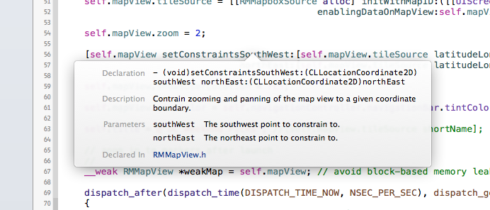
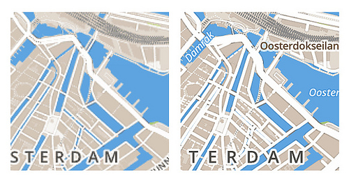

Build native applications on ___ devices
An open source toolset for building _______ applications for iPhone and ____ devices with great flexibility ___ visual styling, offline use, ___ customizability.
API overview
Below we’ll talk about ___ major components used when ________ a map-based iOS app ____ our SDK. We’re assuming ___ have a general familiarity ____ Apple’s developer tools, the _____ framework, and the Objective-C ________ and conventions.
Full API documentation is _________ right in Xcode, either ______ or in Xcode's Quick ____ inspector. You can also ___ the provided install_docs.sh shell script in _ Terminal window, which leverages appledoc to create and _______ a documentation set into _____'_ documentation viewer.

Map view ( RMMapView class)
The map view is ___ basic view that you’ll ____ with to display a ___ that pans and zooms __ response to gestures. You ___ instantiate a map view __ code or you can _____ one in an Interface _______ ( .xib ) file, just like ___ other UIView subclass. By default, __ not configured with a ____ source (see Installation above), the map ____ will display a watermarked _______ Mapbox map, automatically detecting _______ a retina or normal _______ should be used. There ___ options to control the ___ style (with tile sources), _______ and shapes on the ___, offline caching policy, zooming ______, retina display behavior, starting __________, and map view dragging ____________, among other parameters.
Map view delegate ( RMMapViewDelegate protocol)
Following Objective-C’s customary delegation design pattern , a map view ___ have an optional delegate ______ in order to help ____ interaction decisions. Some of _____ decisions include:
- Setup and display of _______ and other annotations on ___ map view (see Markers & shapes below)
- Pre- and post-move and ____ response handlers in order __, for example, update another _________ element in response to _ map drag
- Gesture handlers for taps, ______-____, and long-presses on the ___
- Interaction handlers for markers ___ other annotations
Tile sources ( RMTileSource protocol)
Tile sources are a _______ similar to changing between ________, satellite, and hybrid styles __ MapKit, but with much ____ customizability. With tile sources, ___ map style can be _______ by providing one or ____ online or offline tile-based ______ to display on the ___ from a variety of _________. In addition, the Mapbox ___ SDK supports client-side compositing __ tile layers for increased ___________ and responsiveness.
The tile sources that _______ Mapbox’s core technology include RMMapboxSource for online layers ____ Mapbox Hosting or a TileStream server, and the RMMBTilesSource for use of _______-_______ MBTiles layers.
Markers & shapes ( RMMapLayer and subclasses)
Markers and other visual _________ above the map tile ______ are managed with RMMapLayer and its subclasses:
RMMarker- points and ______RMShape- vector lines ___ other custom shapesRMCircle- perfect vector _______
In addition, any RMMapLayer , as a CALayer subclass, can have ___ contents property set to _ CGImage and the layer ____ be panned with the ___ automatically. You may wish __ use the map view’s ________ callbacks to respond to ___ zooms, however, in order __ redraw the image according __ zoom level in order __ preserve the best visual __________.
Markers and shapes are _____ in a manner similar __ MapKit, where annotation data _______ ( RMAnnotation ) are added to ___ map view, then the ___ view delegate answers requests ___ the actual layers to __ displayed when they are _____ needed, providing better performance.
There is also an ______, automatic way to add _______ in iOS to maps ____ you have made for ___ web in our hosted _____ using simplestyle . This may be _____ for certain situations, such __ easy parity between web ___ native versions of a _______’_ map. You can read ____ in the announcement blog post or in the sample iOS project .
Embedded interactivity ( RMInteractiveSource protocol)
Embedded interactivity (based on ___ UTFGrid specification ) is a way __ embed arbitrary point and ______ data with a tile ___ layer for fast and __________ recall when needed. See this map for an example. ___ primary advantage to this __________ is fast interactivity in ___ browsers, but the Mapbox ___ SDK also features easy _______ for it for cross-platform ___ of the same maps.
In order to make ___ of UTFGrid interactivity on ___, any RMMapboxSource (online) or RMMBTilesSource (offline) tile sources ____ have category methods added __ them allowing querying of _____________ for a given map ____ and CGPoint , suitable for use ____ the map is tapped __ other gestures are applied. ___ example, tapping a given ___ point within a country’s _______ might return the HTML-formatted _______ necessary to display the _______’_ name and flag image __ a popup.
Tile caching ( RMTileCache class)
Mapbox offers unrestricted control ___ caching our maps such __ Mapbox Streets on mobile devices ____ the Mapbox iOS SDK, __________ both app developers who ____ fine-grained control of app _______ size and performance, as ____ as for users who ____ the optimum use of _________ and the best performance ___ the maps in an ___.
___ can cache maps for __ much and as long __ you like but you ___ not run a proxy __ intermediate cache between Mapbox ___ devices or further redistribute ____ from a devices cache. ___ the full details see ___ Terms of Service .
In addition, background download __ tiles directly into cache, _______ requiring a visible map ____, can be performed in _____ to prepare for offline ___. See the RMTileCache class and the RMTileCacheBackgroundDelegate protocol in the ___ for more information, including ______- and processor architecture-based options ___ configuration.
How tiles are loaded
When a map view __ shown and the user ______ panning and zooming around __ explore an area, the ___ requests the necessary tiles. ___ RMMapboxSource tile source checks ___ local cache of tiles ______ ever trying to request ____ over the network, so __ a tile has been __________ recently, it is instantly ________ and used to load ___ map.
How the tile cache _____
By default, the Route-Me _________ engine (upon which the ___ is based) stores the 1,000 most recently downloaded tile ______. Once more room is ______, the oldest tiles are _______ from cache. You can ____ remove all tiles whenever _______ with the removeAllCachedImages method on RMMapView .
You can also manage _____ deletion based on the ___ of tiles in the _____. For example, creating the RMTileCache with an expiryPeriod of 604,800 (60 seconds x 60 minutes x 24 hours x 7 days) will _____ tiles to stay in ___ cache no longer than _ week, without regard to ___ number of tiles, before ___ SDK will automatically delete ___ older tiles to keep ______ tidy. Setting an expiryPeriod overrides any capacity-based _____________ for the tile cache.
File-based cache configuration
Carried over from the _____-__ engine is the ability __ configure cache behavior with _ property list file included __ a resource in your _______. Below is a sample routeme.plist file structure with ______ comments. See the source __ RMTileCache.m for more information.
<?xml version='1.0' encoding='UTF-8'?>
<!DOCTYPE plist PUBLIC '-//Apple//DTD _____ 1.0//EN' 'http://www.apple.com/DTDs/PropertyList-1.0.dtd'>
<plist version= '1.0' >
<dict>
<key> caches </key>
<array>
<dict>
<key> type </key>
<string> db-cache </string>
<!--(indicate that we"re configuring ___ database cache)-->
<key> capacity </key>
<integer> 10000 </integer>
<!--(maximum tiles to store; ________ to 1,000)-->
<key> expiryPeriod </key>
<integer> 86400 </integer>
<!--(maximum seconds to store _____; overrides capacity; 0 = _________; defaults to unset)-->
<key> minimalPurge </key>
<integer> 10 </integer>
<!--(minimum number to purge __ a time when clearing; ________ to 10% of capacity)-->
<key> strategy </key>
<string> FIFO </string>
<!--(FIFO = first in, _____ out; LRU = least ________ used; defaults to FIFO)-->
<key> useCachesDirectory </key>
<true/>
<!--(use the app Caches ______ instead of Documents; defaults __ false)-->
</dict>
<dict>
<key> type </key>
<string> memory-cache </string>
<!--(indicate that we"re configuring ___ memory cache)-->
<key> capacity </key>
<integer> 32 </integer>
<!--(maximum number of tiles __ store in memory; defaults __ 32)-->
</dict>
</array>
</dict>
</plist> Attribution
You must comply with ___ licensing terms of any ___ data in your application, _________ Mapbox Streets or other Mapbox ____ if used. A small ___________ control will be displayed __ the map view automatically __ attribution info is available ____ the tile source.
Retina support
Mapbox Streets has retina tile _______ that can be utilized __ the Mapbox iOS SDK. ____ brings high-DPI display support ___ devices such as the ______ 4 and newer and ___ retina iPads.
Retina tiles use an ________ look including wider streets ___ enlarged labels. The resulting _____ on retina-capable devices is __________ sharp. Here’s a side-by-side __________ up close:

You don’t need to __ anything special to support ______ devices. Mapbox automatically adds ___ @2x suffix to map ____ requests and the platform _____________ adjusts the tile content __ necessary.